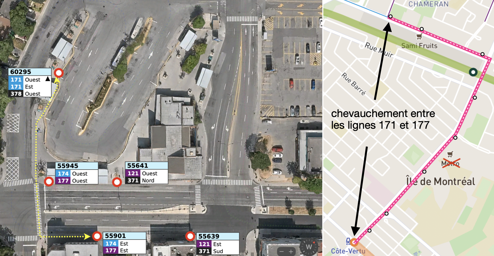
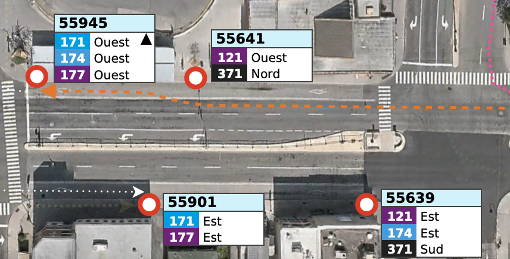
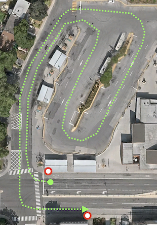
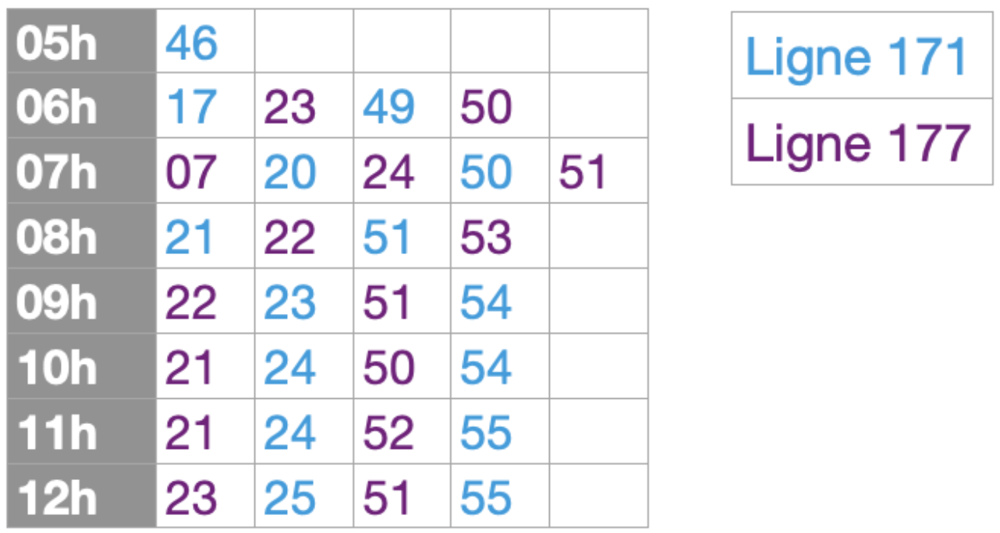

Ici, je propose :
afin d'améliorer l'expérience client. Dès la mise en service de la refonte, la ligne 171 actuelle sera remplacée par les lignes 171 (avec une fréquence beaucoup plus réduire) et 177 (légère bonification en pointe). Ces deux parcours desservent le même secteur, via le même trajet, mais il n'y a pas de concordance des lieux d'embarquement.
En effet, il est clair que les (nouvelles) lignes 171 et 177 doivent rouler en tandem. D'abord, avec 2,5 km de chevauchement, et les deux passant par Jules-Poitras, ces deux lignes complètent le service dans le secteur Chameran. De plus, individuellement, aucune de ces deux lignes ne peut complètement remplacer le niveau de service sur la ligne 171 actuelle : la nouvelle ligne 177, même si fréquente en pointe, sera tout de même beaucoup moins fréquente que la ligne 171 actuelle. Le tableau suivant démontre quelques comparaisons du niveau de service :
| Plage horaire | Intervalle moyen | ||
|---|---|---|---|
| 171 Actuel | 171 | 177 | |
| Pointe AM (ouest) | 4 | 14 | 8 |
| Mi-journée (ouest) | 12 | 25 | 30 |
| Pointe PM (est) | 8 | 16 | 12 |
| Samedi PM (est) | 16 | 31 | 21 |
Considérant l'achalandage élevé de la ligne 171 actuelle, ainsi que le manque de coordination des passages sur les lignes refaites, la fréquence de passage sera inégale. Des surcharges sont alors tout à fait possibles : pour distribuer la charge, les passagers vont tenter de traverser le boulevard de la Côte-Vertu. Cela pourrait potentiellement causer un enjeu de sécurité, surtout si certains tentent de courir pour tenter d’attraper l’un ou l’autre autobus.

Le schéma ci-dessous démontre l’assignation des quais suggérée ainsi que le parcours HLP entre les direction ouest et est pour la ligne 171 (surligné en vert) :


Enfin, il semblerait également que l’horaire de ces deux lignes est très mal décalés. Lors de mon utilisation de l’outil de planification, les deux lignes viennent souvent en même temps, avec la même fréquence de 30 minutes hors pointe.
Cela est autant frustrant, puisque ces deux lignes visent à remplacer la ligne 171. Le mauvais décalage résulte plutôt à une diminution de fréquence, puisque deux lignes qui viennent en même temps aux 30 minutes ne donne pas un service mieux qu’aux 30 minutes. L’exemple ci-dessous montre l’horaire en direction ouest, samedi matin :

En général, lorsque les deux lignes sont aux mêmes fréquences, il serait bien d’essayer de décaler les heures de passage. Cela est surtout utile hors pointe lorsque la fréquence est de 30 minutes. Le matin, il est mieux de privilégier la direction ouest, et direction est en après-midi et en soirée.